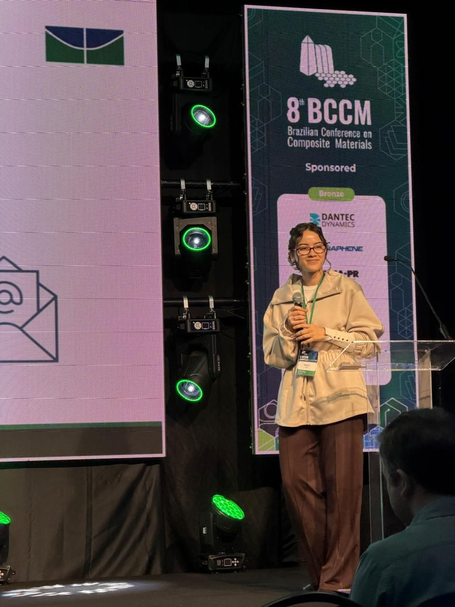
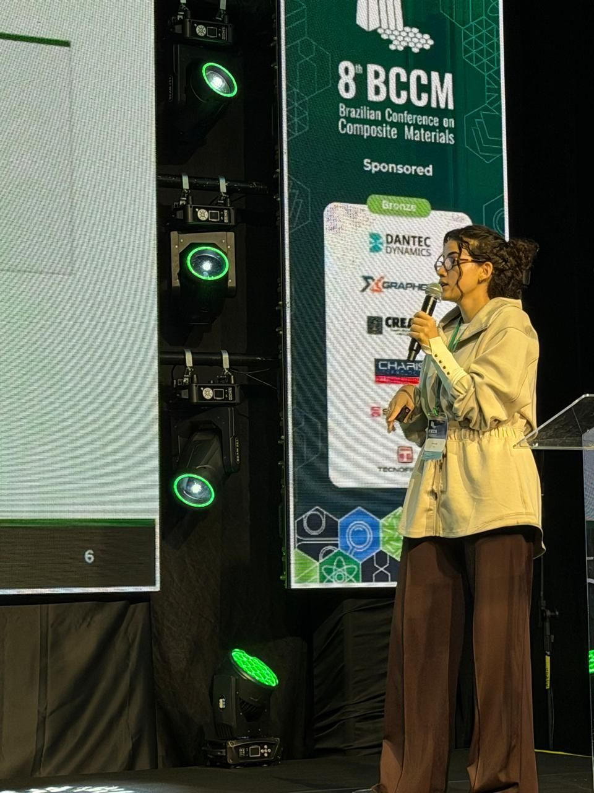
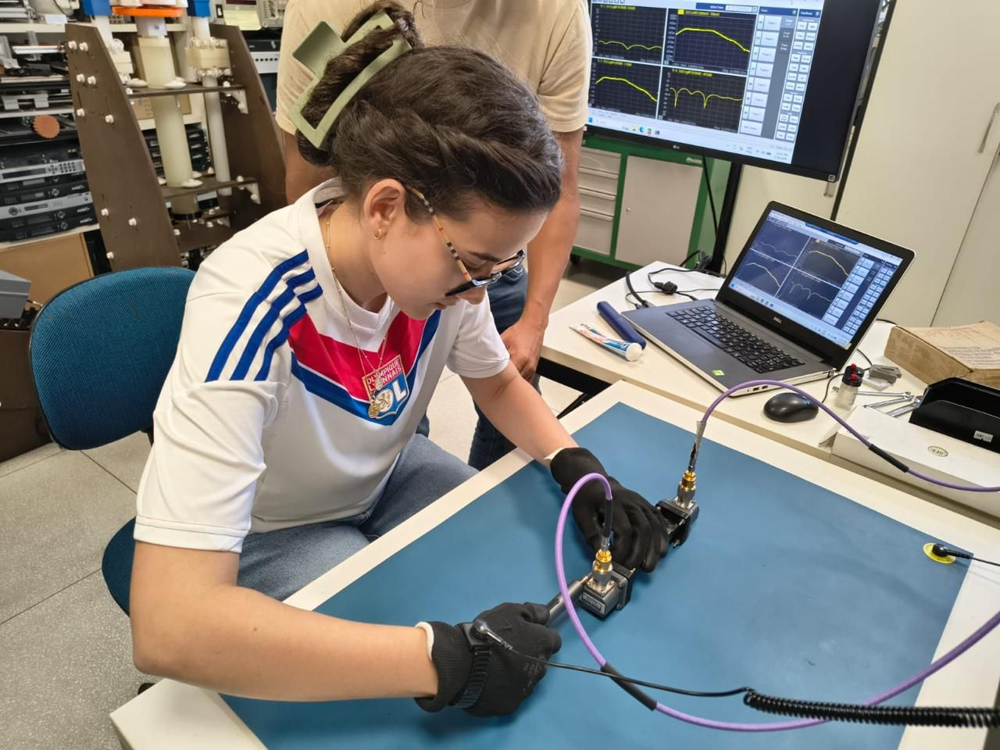

I work on filament winding of carbon fibre composites: how winding angle, pretension and resin volume affect the microstructure and strength of the part, and how to generate the machine path that lays each tow.
B.Sc. in Aerospace Engineering, University of Brasília (UnB)
Graduation
Expected end of 2027
Laboratory
Aerospace Structures and Materials Laboratory (LEMA), since 2025; official member since 2026
Process
Filament winding, carbon fibre / epoxy
Based in
Brasília, Brazil
Helical winding: crossing ±α tows form the diamond pattern
Research
Filament winding at LEMA
At the Aerospace Structures and Materials Laboratory of the University of Brasília, I work across the filament winding process: CAD modelling of components and mandrels, winding-path generation, manufacturing, material characterisation and structural analysis.
Schematic of wet filament winding. The parameters I study are set at different points of the line: pretension at the tensioner, resin volume at the resin bath, and the winding angle α by the ratio between the mandrel surface speed ωr and the carriage speed v.
Optical micrographs of tow cross-sections. Select to enlarge.
Process and properties
Winding parameters, microstructure and strength
Measuring winding angle, pretension and resin volume, and characterising how they affect the microstructure and tensile strength of consolidated, impregnated carbon fibre tows.
Working on the filament winding machine at LEMA, University of Brasília
Publications
Conference papers
I presented both extended abstracts orally, one as first author and one as second author, at the 8th Brazilian Conference on Composite Materials (BCCM8), Foz do Iguaçu, 16 to 19 August 2026.
Influence of Filament Winding Parameters on the Microstructure and Tensile Strength of Consolidated and Impregnated Carbon Fiber TowsBCCM8 · Second author · Oral presentation · August 2026 · Certificate (PDF)
A Simplified Analytical Solution for the Machine Path Generation in Filament Winding of Rectangular TubesBCCM8 · First author · Oral presentation · August 2026 · Certificate (PDF)


Presenting at BCCM8, Foz do Iguaçu, August 2026
Projects
Other work
Filament-wound drone structure
Projeto de extensão · UnB
Feasibility study of a filament-wound selective-spraying structure for a multirotor drone. I work on the filament winding of the structure and on its structural calculations.
Ongoing
Composite components with LabTelecom
Telecommunications Laboratory · UnB
Partnership with the Telecommunications Laboratory to produce components in composite materials.

Measuring with a vector network analyser (VNA)
Compact stars
PIBIC research scholarship · UnB
Astrophysics project on white dwarfs and neutron stars: fermion degeneracy pressure and the Chandrasekhar mass limit.
Sep 2024 – Sep 2025
Teaching
Teaching and outreach
Undergraduate teaching assistant at the University of Brasília in Aerospace Structural Mechanics, Calculus I, Calculus III and Physics I, holding office hours for students.
Explorando a Engenharia de Termofluidos e Veículos de Competição, a course for university students (two editions).
Pré-Cálculo at the Faculdade de Ciências e Tecnologias em Engenharia (FCTE/UnB), second semester of 2023.
School outreach: FCTE's participation in the Colégio Leonardo da Vinci careers fair, and the reception of Federal District school students at the Gama campus.
Skills
Tools and languages
CAD
CATIA, Fusion 360, AutoCAD
Finite element analysis
Ansys Mechanical, Ansys APDL
Computing
MATLAB, Mathcad, Scilab
Manufacturing
Filament winding, composites, CNC milling, 3D printing
Documents
LaTeX, Mendeley
Languages
Portuguese (native), English (fluent), Spanish (intermediate), French (basic)
Education
Education
To scale by year. Light bar: before official LEMA membership. Dashed: expected, up to graduation at the end of 2027.
B.Sc. in Aerospace Engineering
University of Brasília (UnB), Brazil
Expected to be completed by the end of 2027.
2022 – 2027
U.S. High School Diploma
Mizzou K-12 Online, University of Missouri, USA
Online programme combining liberal arts and STEAM coursework, built around research, discussion and project work on global issues. Coursework completed in 2020; the diploma was awarded in February 2022, delayed by the COVID-19 pandemic.
I lived in student housing on campus and took immersive English classes, following the routine of a university student. The programme included sessions from several departments, such as business, engineering, nursing and medicine (where I delivered a baby on a robotic patient simulator), as well as attending a court trial, cultural activities and visits. I received a certificate of completion.
2018
Outside the lab
Roller skating: regional championships since 2024, competing in two to three categories, with gold and silver medals.
Artistic swimming: two gold medals at the São Paulo Opening in 2019, in the quartet and duet events.
Model United Nations: World Health Organization (WHO) committee simulations.